?정주샘 · 책에서 꺼낸 질문
MBTI가 묻지 않는 질문 하나로,
내 성격 지도를 다시 그려 보기
■ 라미 카민스키 『이향인』에서 출발하는 이야기
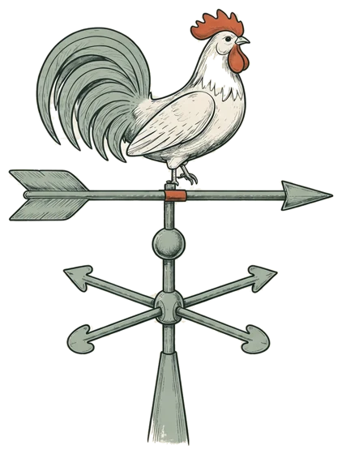
!이 강의에서 얻을 것
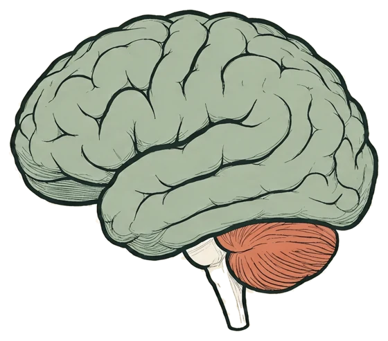
사교성이 아니라 에너지의 방향, 그리고 두 무더기가 아닌 한 줄의 눈금
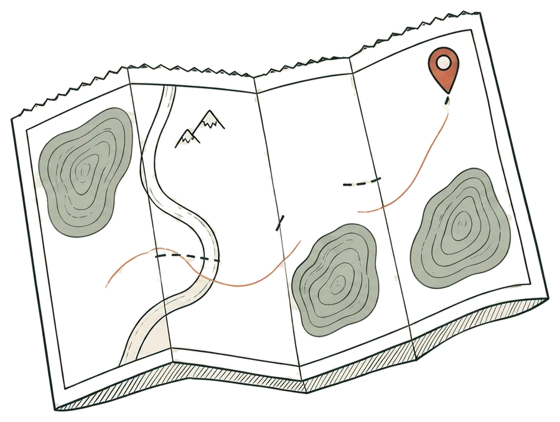
“얼마나 ‘우리’가 되고 싶나요?” 내 점을 직접 찍어 봅니다
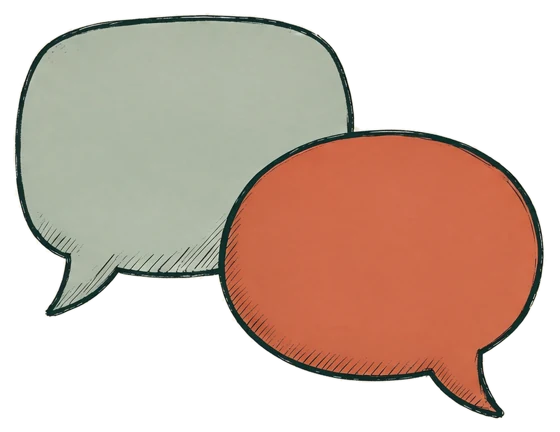
몇 사람과 이어지는 소속, 무리에 녹아드는 소속
1사람은 좋은데, 무리는 어색하다
1사람은 좋은데, 무리는 어색하다
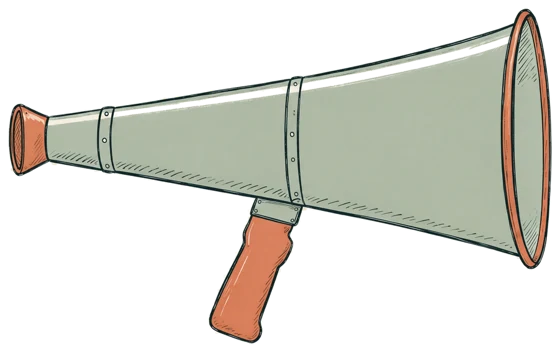
이런 자리가 즐거워야 할 것 같은데, 즐겁지 않다
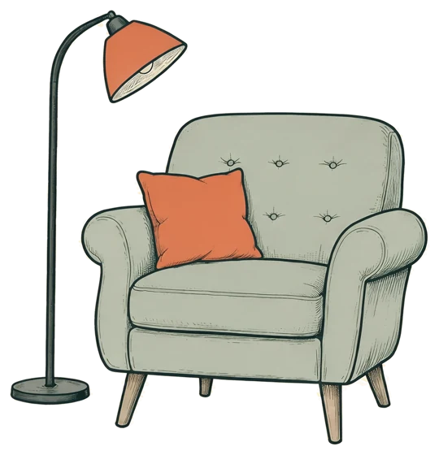
사람이 싫지도, 만나서 피곤하지도 않다
2E와 I는 무엇을 재고 있을까
E = 사교적인 사람, I = 수줍은 사람→어디에서 힘을 얻는가
바깥의 사람과 일에서 힘을 얻는다
안쪽의 생각과 기억에서 힘을 얻는다
2E와 I는 무엇을 재고 있을까
그래프는 개념도입니다. Pittenger(1993)가 정리한 연구들의 경향을 그린 것으로, 실제 자료의 수치를 옮긴 것이 아닙니다.
2E와 I는 무엇을 재고 있을까
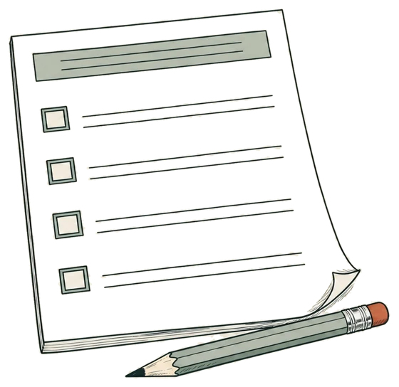
5주 뒤에 다시 검사하면
많게는 절반이 다른 유형으로 나온 연구들3
점수가 가운데에 가까운 사람일수록 글자가 잘 바뀝니다.3·4
2E와 I는 무엇을 재고 있을까
어색한 건 사람이 아니라, ‘무리’였다
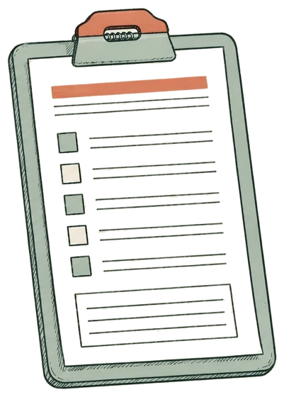
3이향인, 다른 쪽을 보는 사람
Otrovert
오트로버트 · 다른 쪽을 향한 사람5
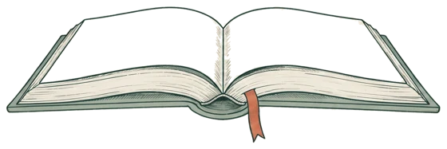
한국어판 『이향인』 · 21세기북스6모두가 같은 쪽을 볼 때,
다른 쪽을 가리키는 풍향계
3이향인, 다른 쪽을 보는 사람
3이향인, 다른 쪽을 보는 사람
같은 노래에 같이 들뜨고, 같은 편을 같이 응원한다
사람과는 잘 지내지만, 무리의 ‘우리’에 저절로 이어지지 않는다
3이향인, 다른 쪽을 보는 사람
3이향인, 다른 쪽을 보는 사람
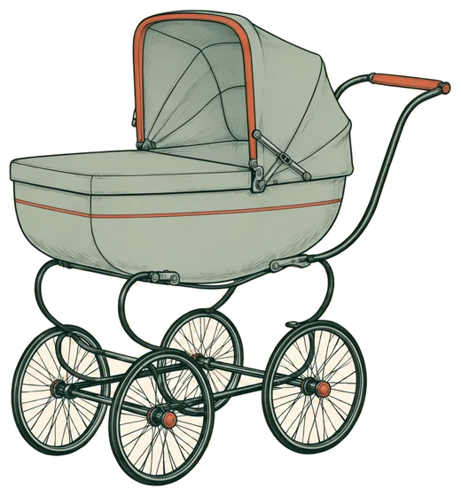
종교도, 국적도 없이 태어난다
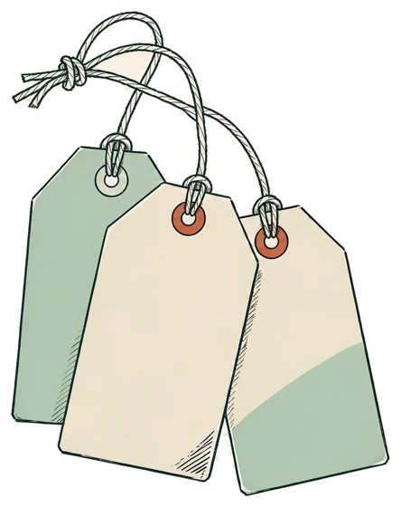
4선 하나를, 평면으로
MBTI의 질문 · 에너지 줄
“당신은 어디서
충전되나요?”
카민스키의 질문 · 소속 줄
“당신은 얼마나
‘우리’가 되고 싶나요?”
4선 하나를, 평면으로
오른쪽 아래는 MBTI의 선 하나로는 보이지 않는 칸입니다. 처음 장면의 그 사람이 여기 있습니다.
혼자 충전하지만, 단짝 셋의 대화방이 제일 편한
사람 많은 자리에서 힘이 나는, 응원석 맨 앞의 응원단
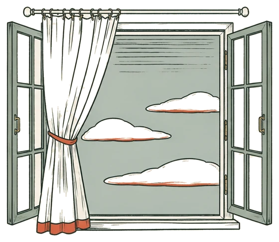
혼자 있는 시간이 가장 편한
처음 장면의 그 사람 · 카민스키의 ‘이향인’
4선 하나를, 평면으로
E인지 I인지보다,
“우리 편”이라는 말이 마지막으로 진심으로 나왔던 때는?
평면을 누르면 점이 찍힙니다
혼자 충전하지만, 단짝 셋의 대화방이 제일 편한
사람 많은 자리에서 힘이 나는, 응원석 맨 앞의 응원단
혼자 있는 시간이 가장 편한
처음 장면의 그 사람 · 카민스키의 ‘이향인’
5네 글자가 만드는 ‘우리’
“우리 INFP들은 다 그래.”
“역시 T라서 그래.”
5네 글자가 만드는 ‘우리’
그림은 실제 작품이 아니라, 두 화가의 느낌을 빌린 대역입니다.
5네 글자가 만드는 ‘우리’
점수를 나눌 때 자기 무리 쪽으로9
두 무리가 모두 더 받는 방법을 두고도9
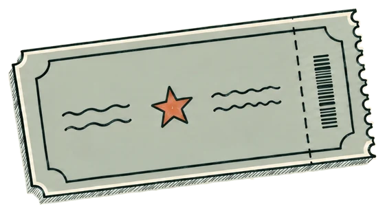
대놓고 무작위로 나눈 무리도 더 챙겼다10
막대는 개념도입니다. 실험의 점수를 옮긴 것이 아닙니다.
5네 글자가 만드는 ‘우리’
“너는 무슨 유형이야?”
“너는 어느 편이야?”
그래서 이향인에게는, MBTI 대화가 묘하게 불편할 수 있습니다.
6그럼, 이향인에게는 소속이 필요 없을까?
관계가 없으면 몸과 마음의 건강까지 나빠진다는 연구들
Baumeister & Leary (1995)
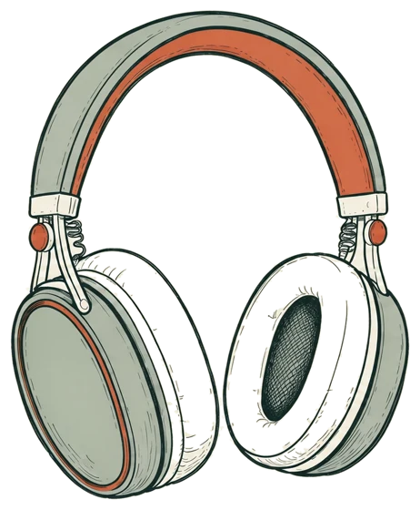
그럼 이향인은 이 오래된 결론과 정면으로 부딪칠까?
6그럼, 이향인에게는 소속이 필요 없을까?
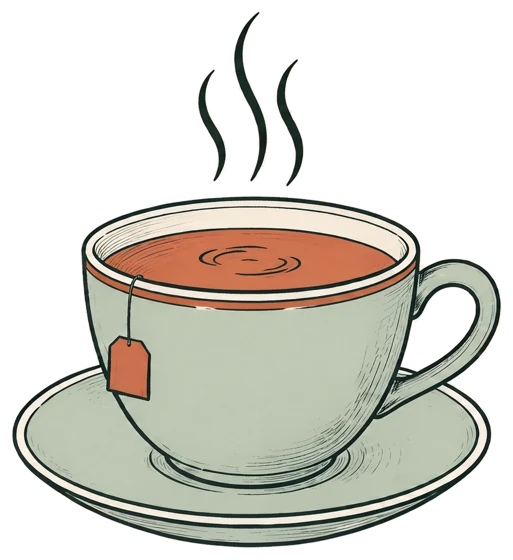
자주, 따뜻하게 만나고6오늘의 해석
깊고, 오래 가는 몇 개의 관계
이향인도 원한다 ○하나의 ‘우리’가 되는 느낌
이향인에게 빠진 것일지도 ?6다만, 짚어 둘 것
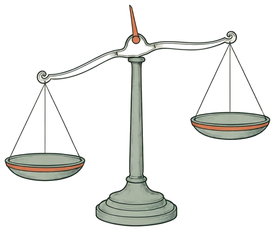
증명된 성격 유형
오래 지켜본 끝에 내놓은
좋은 질문
7미뤄 둔 역설적인 반응
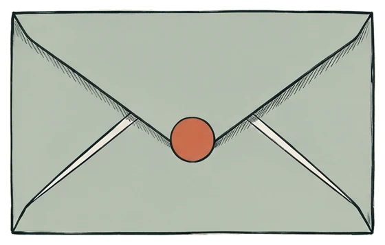
카민스키에 따르면, 책이 나온 뒤 수만 명이 질문지에 이름을 올리고 “이게 바로 나”라는 편지가 쏟아졌다8·13열일곱 번째 유형으로 쓰는 순간, 또 하나의 꼬리표
7꼬리표 대신
첫째
나는 어디서 충전되는가
둘째
나에게는 어떤 ‘우리’가, 얼마나 필요한가
한 번 받으면 끝나는 글자가 아니라, 가끔 다시 물어봐야 하는 질문
8교실과 집에서
“왜 같이 안 어울리니?”
“너는 누구랑 있을 때 편해?”
“몇 명이랑 하는 게 좋아?”
무리에 녹아드는 것만이 어울리는 방법은 아닙니다. 한 친구와 깊이 이어진 아이도, 누군가와 함께 있는 아이입니다.
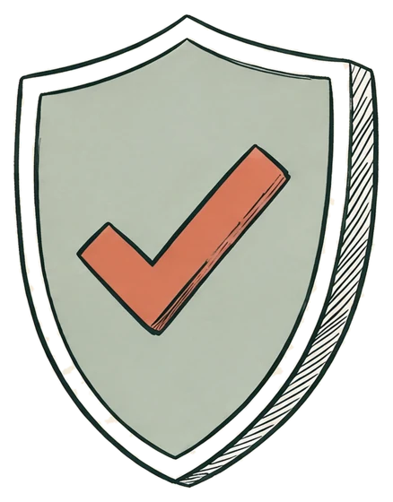
다만 아이가 오래 외로워하거나 괴로워 보인다면, 성향과는 따로 살펴야 할 일입니다.교실 장면은 설명을 위한 가상 예시이고, 질문은 효과를 검증한 방법이 아니라 이 강의의 제안입니다.
9다시, 건배 자리의 그 사람
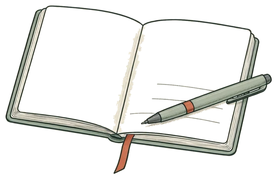
예전에는
“나는 E인데, 왜 이러지? 내가 좀 이상한가?”
이제는
“나는 사람을 좋아한다.
다만 무리보다, 한 사람을 좋아한다.”
평면의 어느 칸에 점을 찍으셨나요?
지금 나에게
꼭 필요한 ‘우리’는,
몇 명인가요?
책 『이향인』의 내용은 책 본문이 아니라 저자의 공개 인터뷰·팟캐스트·언론 보도로 확인한 것만 썼고, 책 문장은 인용하지 않았습니다. 회식·단체 대화방·응원석·교실 장면은 설명을 위해 구성한 가상 예시입니다. ‘소속은 두 갈래’라는 해석과 교실에서 건넬 질문은 이 강의의 제안이며, 카민스키나 논문 저자의 주장이 아닙니다. 이향인은 진단명이 아니며, 오래 이어지는 외로움이나 괴로움은 전문가와 따로 살펴야 합니다.